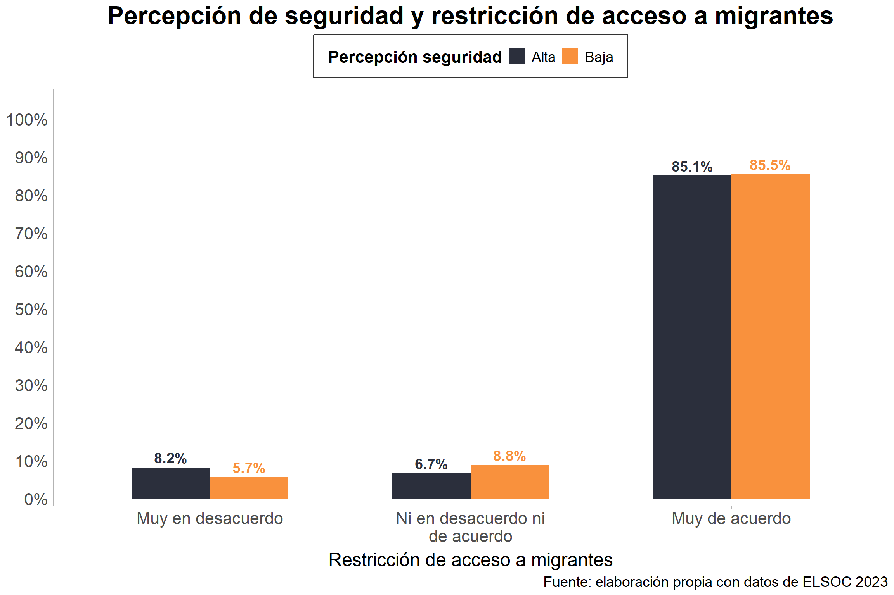
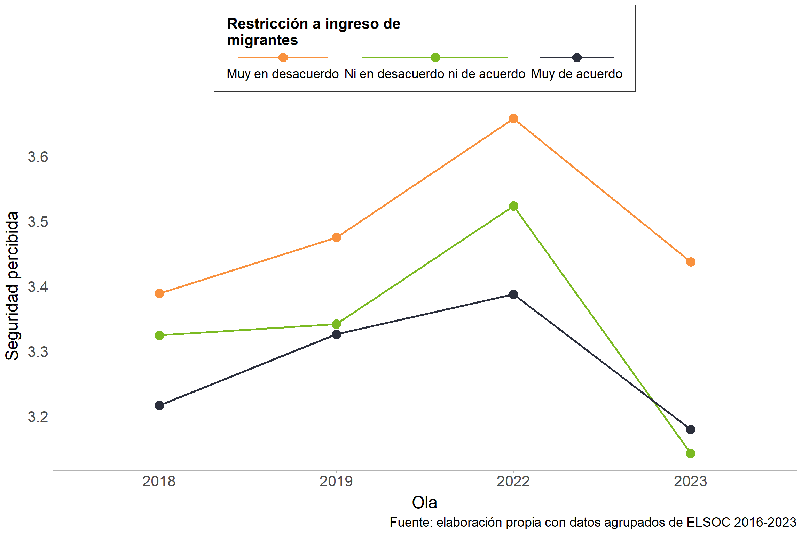

4 Cohesión Horizontal: Seguridad
La Figure 4.1 muestra la distribución de la seguridad objetiva y subjetiva en tres niveles (bajo, medio y alto). En el caso de la seguridad objetiva, la mayor parte de las personas se concentra en el nivel alto, mientras que los niveles bajo y medio reúnen proporciones menores, lo que indica que, de acuerdo con indicadores externos y verificables, la seguridad se percibe de manera mayoritariamente positiva. En contraste, la seguridad subjetiva presenta una distribución más equilibrada: si bien el nivel alto sigue siendo el predominante, los niveles bajo y medio alcanzan una proporción mayor que en la seguridad objetiva. Esto sugiere que, en términos de percepciones individuales, las personas tienden a sentirse menos seguras de lo que reflejan los indicadores objetivos.
La Figure 4.2 se visualiza la asociación entre la percepción de aumento de desempleo a causa de inmigrantes (eje x), y el índice de seguridad subjetiva (eje y), el cual fue construido mediante el promedio calculado de dos indicadores: satisfacción de seguridad en el barrio y percepción de seguridad barrial (si le interesa profundizar en cómo se construyó este y los demás índices, revisar el anexo.
Se puede apreciar que la cantidad de personas que percibe una seguridad baja aumenta en la medida que se está más de acuerdo con que los inmigrantes causan desempleo en el país. Esto se nota en la consistencia en las categorías “Ni en desacuerdo ni de acuerdo” y “Muy de acuerdo” respecto a la concentración de respuestas, superando notoriamente la poca seguridad de quienes no creen que la inmigración incide en la empleabilidad. Por tanto, se refleja una correlación negativa entre la sensación de seguridad y la carencia de empleos debido a extranjeros.

Por su parte, la Figure 4.3 muestra la relación entre la percepción de seguridad y el nivel de acuerdo con restringir el acceso a migrantes, a partir de los datos de la ola 2023 de la encuesta ELSOC. Se observa que, independientemente de si las personas reportan una percepción de seguridad alta o baja, existe un amplio consenso en torno a la necesidad de establecer restricciones: el 85,1% de quienes se sienten más seguros y el 85,5% de quienes perciben menor seguridad se declaran “muy de acuerdo”. En contraste, las posiciones de rechazo resultan claramente minoritarias: solo un 8,2% de quienes perciben alta seguridad y un 5,7% de quienes reportan baja seguridad están “muy en desacuerdo”, mientras que alrededor de un 7% a 9% se ubica en una posición intermedia de ni acuerdo ni desacuerdo. En síntesis, el apoyo a la restricción hacia los migrantes es elevado y transversal, sin que se observen diferencias sustantivas según la percepción subjetiva de seguridad.
La Figure 4.4 se grafica la relación entre la percepción de pérdida de identidad del país a causa de inmigrantes y el índice de seguridad objetiva, construido a partir de la frecuencia de peleas callejeras, asaltos y tráfico de drogas en el barrio del encuestado. Se observa que la proporción de personas que reporta bajos niveles de seguridad aumenta progresivamente a medida que crece el acuerdo con la idea de que los inmigrantes restan identidad al país. En consecuencia, mientras menor es la seguridad objetiva percibida en el entorno, mayor es la convicción de que la inmigración erosiona la identidad nacional.
La Figure 4.5 refleja la asociación entre seguridad objetiva y percepción de pérdida de identidad del país a causa de los inmigrantes, lo cual está graficado por género. Se puede observar que, en el caso de los hombres, las categorías más polarizadas concentran la mayoría de las respuestas, por lo que no hay un patrón muy claro. En cambio, a medida que las mujeres viven en entornos menos seguros, están más de acuerdo con que el país pierde identidad a causa de los inmigrantes.

La Figure 8 muestra el cruce entre la percepción de desempleo atribuido a inmigrantes y la seguridad objetiva, diferenciando por nivel educacional. A la izquierda se presentan las personas con título universitario, entre quienes las mayores proporciones de baja seguridad se concentran en las categorías neutra y “Muy de acuerdo”. A la derecha se observan las personas sin título universitario, donde se aprecia un patrón distinto: quienes no han completado la educación terciaria tienden a mostrar respuestas más polarizadas. En este grupo, las categorías “Muy en desacuerdo” y “Muy de acuerdo” concentran las proporciones más altas de quienes perciben bajos niveles de seguridad. En síntesis, los resultados evidencian que el nivel educativo modula la forma en que se vincula la seguridad con las actitudes hacia la migración, diferenciando patrones de respuesta entre personas con y sin estudios universitarios.
4.1 Cruces Longitudinales
La Figure 9 muestra la evolución de la subdimensión de seguridad objetiva según el grado de acuerdo con la afirmación de que Chile está perdiendo su identidad nacional debido a la llegada de migrantes, entre 2016 y 2023. En términos generales, la seguridad objetiva es consistentemente más alta entre quienes están muy de acuerdo con la idea de pérdida de identidad, mientras que alcanza niveles más bajos entre quienes están muy en desacuerdo. El año 2018 registra el valor más alto de esta subdimensión para todos los grupos, con la excepción de quienes declaran estar ni de acuerdo ni en desacuerdo, quienes muestran un descenso en comparación con 2017.
Posteriormente, se observa una caída generalizada en los niveles de seguridad objetiva, especialmente notoria en 2022. Sin embargo, entre 2022 y 2023 emerge un repunte, más marcado en el grupo que está muy de acuerdo con la pérdida de identidad, y más moderado en quienes están muy en desacuerdo. Esto sugiere que las percepciones de seguridad objetiva se articulan en estrecha relación con las creencias sobre la migración y su efecto en la identidad nacional, y que las oscilaciones en el tiempo no afectan a todos los grupos de la misma manera. Si bien las tendencias fluctúan a lo largo del período —con un máximo en 2018, un descenso en 2022 y un repunte en 2023—, lo notable es la consistencia en la brecha entre grupos: en todos los años, quienes perciben mayor pérdida de identidad reportan mayor seguridad objetiva, lo que sugiere un patrón estable en el tiempo más allá de coyunturas específicas.
Respecto a la percepción de seguridad pública, la Figure 4.7 muestra su evolución entre 2016 y 2023 en relación con el grado de acuerdo respecto a que Chile pierde identidad nacional por la llegada de migrantes. En términos generales, se observa una tendencia a la baja en la percepción de seguridad durante el período analizado, especialmente marcada entre 2019 y 2023, lo que coincide con hallazgos de otros estudios recientes.
Dentro de esta trayectoria, los resultados revelan diferencias sistemáticas entre los grupos. Quienes están muy de acuerdo con la idea de pérdida de identidad presentan de manera consistente los niveles más bajos de seguridad percibida, sin mostrar variaciones que reviertan este patrón en ningún año de la serie. En contraste, quienes están muy en desacuerdo registran los valores más altos, aunque también experimentan una caída abrupta entre 2022 y 2023. Por su parte, quienes se ubican en una posición intermedia —ni de acuerdo ni en desacuerdo— muestran una evolución similar a la de los grupos en desacuerdo, con niveles relativamente altos hasta 2019, una disminución marcada a partir de 2022 y una posición intermedia entre los otros dos grupos en la comparación final de 2023.
La Figure 4.8 muestra la evolución de la percepción de seguridad pública entre 2016 y 2023, diferenciada según el grado de acuerdo con la afirmación de que la llegada de migrantes afecta la pérdida de identidad en el país.
En todos los años de la serie, quienes se declaran muy de acuerdo con la idea de que la migración influye en la pérdidad de identidad reportan los niveles más bajos de seguridad pública, mientras que los que están muy en desacuerdo muestran los niveles más altos. El grupo intermedio —quienes señalan estar ni de acuerdo ni en desacuerdo— se ubica de forma constante entre ambas posiciones, con una trayectoria descendente que se intensifica en los últimos años. Estos resultados sugieren que las concepciones sobre la migración, en este caso en la potencial amenaza que representa para el acceso al trabajo, se asocia con una visión más crítica o deteriorada de la seguridad pública.
En el caso de la Figure 11 que muestra la evolución de la percepción de seguridad pública entre 2016 y 2023, diferenciada según el grado de acuerdo con la afirmación de que la llegada de migrantes aumentaría el desempleo, al igual que en la figura anterior, se observa una tendencia decreciente en la seguridad percibida, con una baja especialmente pronunciada entre 2019 y 2023.
En todos los años de la serie, quienes se declaran muy de acuerdo con la idea de que la migración influye en la pérdidad de identidad reportan los niveles más bajos de seguridad pública, mientras que los que están muy en desacuerdo muestran los niveles más altos. El grupo intermedio —quienes señalan estar ni de acuerdo ni en desacuerdo— se ubica de forma constante entre ambas posiciones, con una trayectoria descendente que se intensifica en los últimos años. Estos resultados sugieren que las concepciones sobre la migración, en este caso en la potencial amenaza que representa para el acceso al trabajo, se asocia con una visión más crítica o deteriorada de la seguridad pública.

La Figure 4.10, que muestra la evolución de la relación entre percepción de seguridad pública y acuerdo con la restricción de ingreso a migrantes entre 2018 y 2023, muestra que la seguridad percibida tiende a ser mayor entre quienes se muestran muy en desacuerdo con la idea de restringir la migración, alcanzando su punto más alto en 2022. En cambio, quienes se declaran muy de acuerdo con la restricción exhiben de manera consistente los niveles más bajos de seguridad percibida a lo largo del período. Esta diferencia se hace más evidente hacia 2022, cuando se amplía la distancia entre los grupos. Sin embargo, a partir de 2022 se produce un quiebre: todos los segmentos experimentan una caída en su percepción de seguridad, que se acentúa con fuerza en 2023. De este modo, aunque se mantienen las jerarquías relativas —con mayor seguridad percibida entre quienes rechazan la restricción y menor entre quienes la apoyan—, la tendencia descendente general sugiere la influencia de factores coyunturales recientes que redujeron la sensación de seguridad en toda la población, independientemente de su postura frente a la migración.

Por su parte, la Figure 4.11, que muestra la evolución de la relación entre percepción de seguridad pública y grado de simpatía hacia los migrantes entre 2016 y 2023, se observa que la seguridad percibida es consistentemente más baja entre quienes expresan poca o ninguna simpatía por la población migrante. Esta brecha se acentúa desde 2019 en adelante, cuando la percepción de inseguridad en este grupo contrasta con la trayectoria ascendente que mostraban, hasta 2022, quienes dicen simpatizar algo o mucho con los migrantes. No obstante, a partir de 2022 la tendencia se revierte: todos los grupos reportan un descenso en su sensación de seguridad, aunque con intensidades distintas. Aun así, en el último año analizado se mantiene la jerarquía relativa: la percepción de seguridad es mayor entre quienes simpatizan mucho con los migrantes, seguida por quienes simpatizan algo, y alcanza sus niveles más bajos en el grupo con menor simpatía. En contraste con el caso de la pérdida de identidad, en esta dimensión las diferencias entre grupos se amplían con el tiempo, pues quienes simpatizan más con los migrantes no solo mantienen una mayor sensación de seguridad, sino que además la incrementan hasta 2022. El descenso en 2023, común a todos los grupos, sugiere la incidencia de factores coyunturales que interrumpieron esa tendencia.